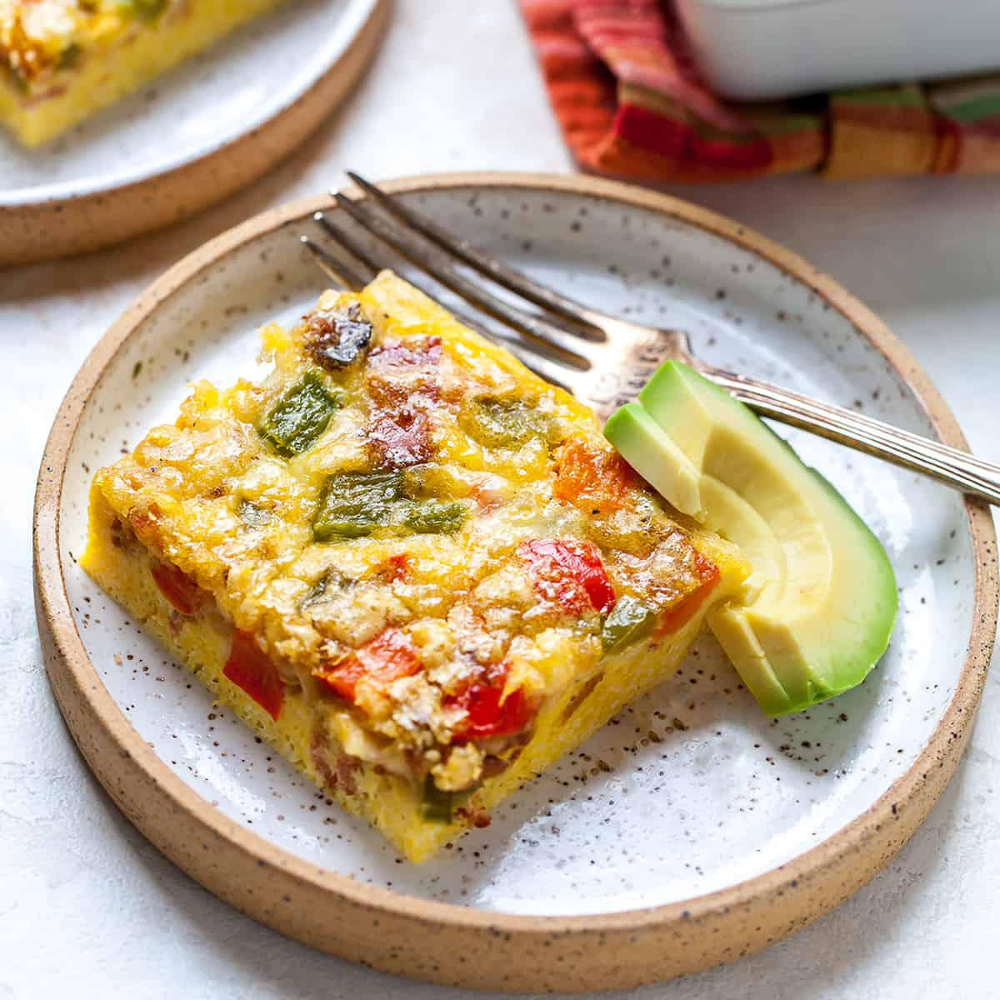

Super Easy Egg Casserole

Description
Tasty egg casserole that husband approves! I frequently make this dish because it's so easy to make. This recipe can be easily doubled or tripled, but you may have to cook it longer.
This egg casserole recipe is quick, easy, and full of flavor. It's the perfect, low-maintenance breakfast to serve a hungry crowd.
Egg Casserole Ingredients
These are the basic ingredients you'll need to make this homemade egg casserole recipe:
- Eggs: Of course, you'll need eggs!
- Cheese and bacon: Diced bacon and a cup of Cheddar cheese takes this egg casserole up a notch.
- Bread: Use whatever bread you have on hand. If your loaf is a little stale, that's even better!
- Vegetables: A red bell pepper and green onions lend color and flavor.
- Milk: A few tablespoons of milk add moisture and help create the perfect texture.
- Seasonings: This egg casserole is seasoned with salt, pepper, and mince garlic.